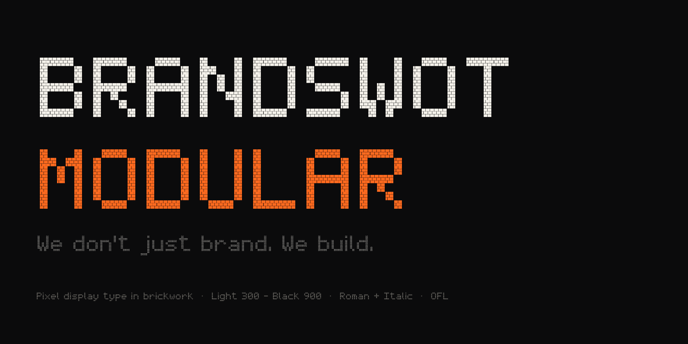
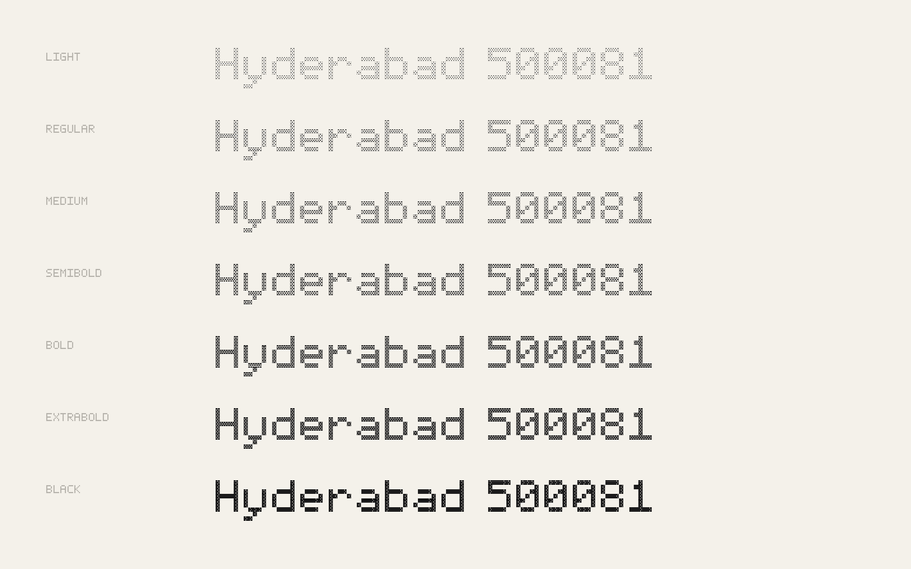
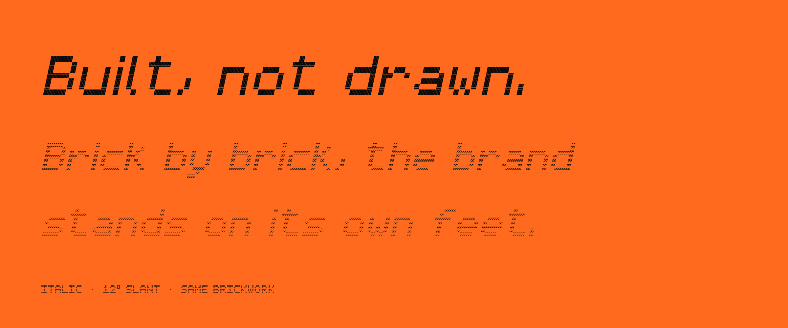

BRANDSWOT Modular began as the wordmark of BRANDSWOT Consultancy, a branding and growth consultancy in Hyderabad whose line is “We don't just brand. We build.” The logo is set in square tiles; the typeface takes that idea one step further and lays every tile as brickwork.

Each letter sits on a 5 × 7 pixel grid. Each pixel is 100 units wide and holds three courses of 40 × 23 bricks with 10-unit mortar, offset in a running bond so that joints never line up vertically. At large sizes you see the masonry; at small sizes the bricks merge into a clean pixel letter.

Instead of thickening strokes, the weight axis changes the mortar. Light opens the joints until the bricks float; Black closes them until the wall is almost solid. Because the grid never moves, every weight shares the same spacing and can be animated freely.

The project is built from a plain-text source: each glyph is drawn with # and . characters in one file, and a small Python script lays the bricks and writes the masters. Anyone can add a letter with a text editor.